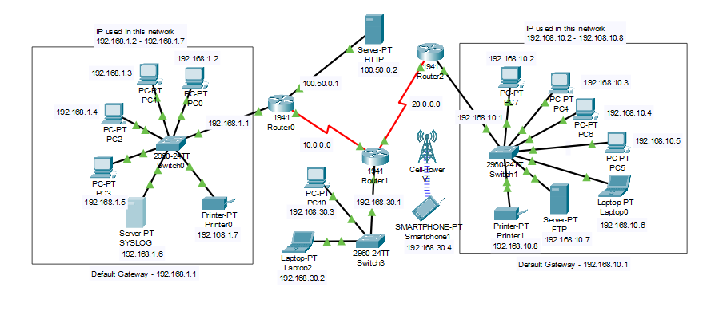
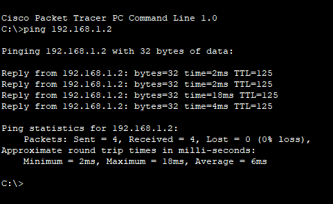
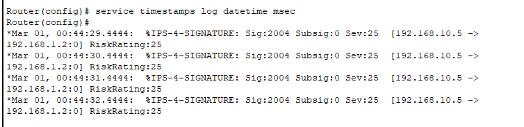
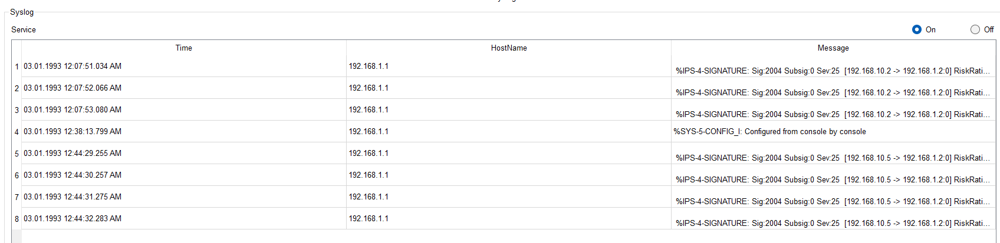

Intrusion Detection System
Design and Implementation of a Intrusion Detection System using Cisco Packet Tracer.
Project Overview
An Intrusion Detection System (IDS) is a key security solution used to monitor network traffic, detect potential intrusions, and raise alerts about malicious or abnormal activities. It acts as a second line of defense, working alongside firewalls and anti-virus tools, to provide visibility into threats that traditional systems may miss.
IDS solutions are categorized into two main types: Network-based IDS (NIDS) and Host-based IDS (HIDS). While HIDS monitors internal system activities, configuration files, and application logs, NIDS focuses on external network traffic flowing between devices, routers, and firewalls.
This project aims to implement a working simulation of a Network-based IDS using Cisco Packet Tracer. The network topology consists of three interconnected networks—each designed with routers, switches, and end devices. Access Control Lists (ACLs) are applied to simulate traffic filtering, and custom rules are configured to monitor and identify potential threats.
Key Objectives and Features:
- Design and configure a simulated enterprise network with multiple subnets.
- Apply ACLs to monitor, restrict, and control data flow between networks.
- Use Packet Tracer’s simulation tools to analyze network behavior and intrusion patterns.
- Demonstrate how the IDS detects anomalies like unauthorized pings, port scans, or access attempts.
- Log and report detected threats using CLI alerts or centralized log view.
The system also emphasizes the limitations of IDS. It is important to understand that while IDS can effectively detect threats, it does not actively block them. Instead, it serves as a passive monitoring tool, sending alerts to the administrator or a centralized log system such as a SIEM (Security Information and Event Management).
Real-World Relevance:
With cyber threats becoming more sophisticated, organizations need adaptive tools that can evolve along with attack vectors. IDS offers proactive threat detection in both academic simulations and real-life deployments. The project strengthens practical knowledge in network design, ACL usage, CLI configuration, and the fundamentals of cyber defense.
By working on this IDS simulation, students gain hands-on experience with the building blocks of intrusion detection technology and a clearer understanding of network security infrastructure in a connected world.
Configuration
The IDS was implemented in a three-network topology designed in Cisco Packet Tracer. Each network includes its own set of devices such as PCs, switches, printers, and servers. The networks are connected via three routers (Router0, Router1, Router2) using dynamic routing. IDS is specifically implemented on Router0 to monitor incoming ICMP traffic.
Fig 1: Intrusion Detection System design.
Step-by-Step Configuration Process
- Device Setup: Place routers, switches, PCs, printers, servers, and assign IP addresses from the respective Class C subnets (e.g., 192.168.1.x, 192.168.10.x, 192.168.30.x).
- Enable Routing: Use dynamic routing (e.g., RIP or EIGRP) on all routers to enable inter-network communication across the three LANs.
- Configure SYSLOG, HTTP, and FTP Servers:
- Enable only the
SYSLOGservice on the SYSLOG server for centralized logging. - Create a simple HTTP page on the HTTP server at IP
100.50.0.2. - Configure the FTP server with username and password .
- Enable only the
- Enable IPS Features on Router0:
- Activate the security license:
license boot module c1900 technology-package securityk9 - Reload the router after license activation:
- Create IPS Directory and Rule:
mkdir IPS ip ips config location flash:IPS ip ips name IDS_RULE - Enable and Unretire Basic Signatures:
ip ips signature-category category all retired true category ios_basic retired false - Apply IPS to Router0 Interface:
interface GigabitEthernet0/0 ip ips IDS_RULE out - Configure SYSLOG Logging:
logging on logging host 192.168.1.6 service timestamps log datetime msec - Customize Signature 2004 (ICMP Echo Request):
ip ips signature-definition signature 2004 0 status enabled engine event-action produce-alert
do reloadNetwork Testing
Connectivity between devices across networks was tested using the ping command. Initially, pings from PC1 (Network 1) to PC7 (Network 2) failed until routing was configured. After IDS activation, ICMP traffic entering Network 1 via Router0 was scanned. When detected, alerts were generated and sent to the SYSLOG server.
This configuration demonstrates the use of signature-based IDS in a simulated network environment, giving hands-on experience with router CLI, access control, and traffic inspection techniques.
Results and Output
After completing the IDS configuration, several tests were conducted to verify the effectiveness of signature-based detection. Below are the outputs obtained during the simulation:
1. Packet Transmission Test
A test packet was sent from PC1 (Network 1) to PC7 (Network 3). The ping was successful, and an acknowledgment was received, verifying end-to-end connectivity across the routed networks.
Fig 1: Ping test from PC1 to PC7 successful.
2. Security Alert in Router 0
Router0, where the IDS rule was applied, successfully detected the ICMP Echo Request. The signature ID 2004 (associated with ICMP) triggered an alert. This confirms that the IDS engine is actively monitoring incoming traffic.
Fig 2: IDS Alert generated on Router0 CLI.
3. Alert Logged in SYSLOG Server
The triggered alert was forwarded to the SYSLOG server (192.168.1.6) for centralized logging. The server captured the alert with full details, including source and destination IPs, event severity, and signature match.
Fig 3: Alert received and logged in SYSLOG server.
Summary
- ICMP traffic successfully reached destination, validating routing and connectivity.
- Signature-based IDS detected the traffic and raised an alert.
- Alerts were both visible on Router0 and logged to SYSLOG server in real-time.
These results confirm that the Network-based IDS is correctly configured and functioning as expected. Although it does not block the traffic, it ensures visibility and alerts the network administrator about any suspicious activity.
⬇ Downloads
You can download the project files directly using the buttons below:
Team Assignments
Intrusion Detection System (IDS)
Describe your IDS project here with code, results, screenshots, and insights.
Assignment by Aarathy R Babu
This section contains the assignment files submitted by Aarathy R Babu.
Assignment by Aswathi H S
This section contains the assignment files submitted by Aswathi H S.
Assignment by Aswathi H S
This section contains the assignment files submitted by Harshit Kumar.
Assignment by Aswathi H S
This section contains the assignment files submitted by Sruthi Balakrishnan P.
Assignment by Aswathi H S
This section contains the assignment files submitted by Krishnapriya V B.